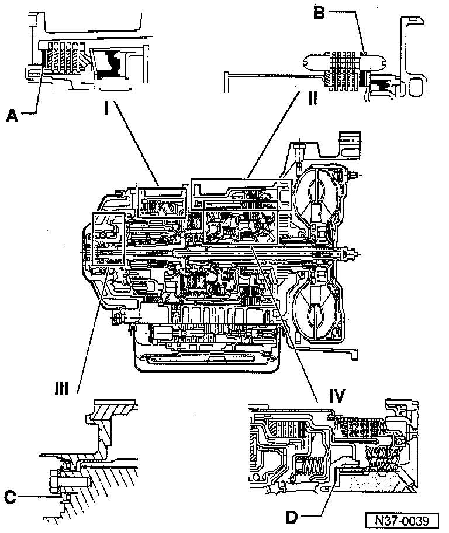

Adjustment Overview

I Reverse gear brake -B1-
- A - Shim
- Determining thickness refer to Reverse Gear Brake -B1-
II 2nd and 4th gear brake B2
- B - Outer plate
- Determining thickness, refer to 2nd And 4th Gear Brake -B2-
III Planet carrier
- C - Shim
- Determining thickness, refer to Planet Carrier
IV Clutch play
- D - Shim
- Determining thickness, refer to Clutch Play Between -K1- and -K2-